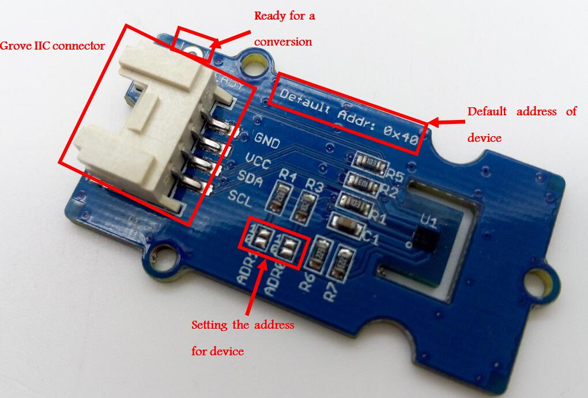
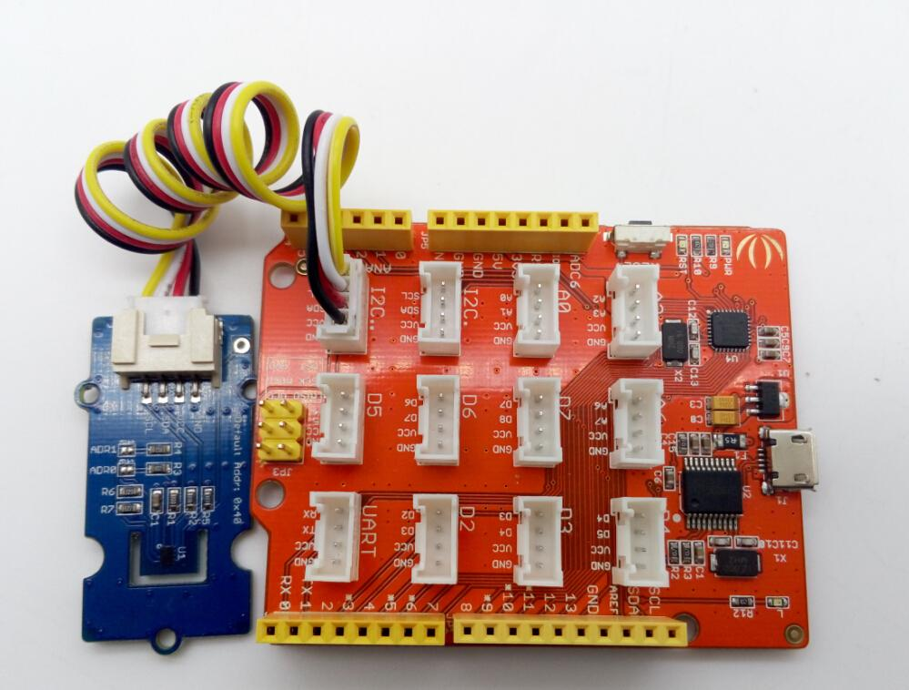

Grove - Temperature&Humidity Sensor (HDC1000) utilizes a HDC1000 sensor.HDC1000 was designed by Texas Instruments.It is a digital humidity sensor with integrated temperature sensor that provides excellent measurement accuracy at very low power.The device measures humidity based on a novel capacitive sensor.The humidity and temperature sensors are factory calibrated.The innovative WLCSP (Wafer Level Chip Scale Package) simplifies board design with the use of an ultra-compact package. The sensing element of the HDC1000 is placed on the bottom part of the device, which makes the HDC1000 more robust against dirt, dust, and other environmental contaminants. The HDC1000 is functional within the full –40°C to +125°C temperature range,and 0-100% RH range.

| Item | Min | Typical | Max | Unit |
|---|---|---|---|---|
| Supply Voltage | 3 | / | 5 | VDC |
| Working Current | 0.12 | / | 90 | uA |
| Relative Humidity Accuracy (Typ) | / | ±3 | %RH | |
| Relative Humidity Operating Range (Typ) | 0 | / | 100 | %RH |
| Temperature Accuracy | / | ±0.2 | / | ℃ |
| Temperature Range | -40 | / | 125 | ℃ |
| Operating Temperature Range | -20 | / | 85 | ℃ |
| Dimension | 40*20 | mm | ||

Here is how to use Grove - Temperature&Humidity Sensor (HDC1000) with Seeeduino Lotus.
Hardware Installation

Software Part
We can get the temperature and relative humidity information from the serial terminal
Note that you have to copy the file readTempHumi.ino(under folder examples) into same folder with file HDC1000.h
File:Grove - Temperature&Humidity Sensor(HDC1000) v1.0 sch pcb.zip
File:Grove - Temperature&Humidity Sensor(HDC1000) v1.0 sch.pdf
Demo code
HDC1000_DataSheet.pdf
Copyright (c) 2008-2016 Seeed Development Limited (www.seeedstudio.com / www.seeed.cc)